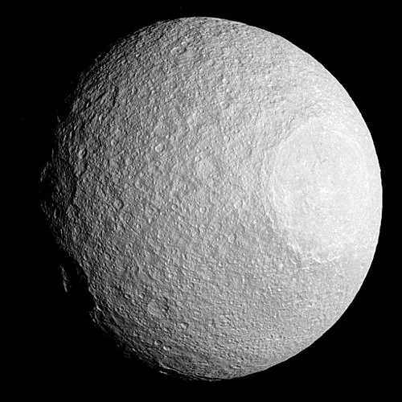

Tétis - Lua de Saturno

Introdução e História
Tétis é uma das luas geladas de Saturno, descoberta em 1684 pelo astrônomo Giovanni Domenico Cassini enquanto observava os satélites do planeta. Por muitos anos foi apenas um ponto de luz nos telescópios, até que missões espaciais trouxeram imagens detalhadas de sua superfície.
A lua é conhecida por sua superfície brilhante e fortemente marcada por crateras e vales, indicando uma história de impactos antigos e processos que moldaram seu terreno ao longo de bilhões de anos.
Características Físicas: Diâmetro, Massa e Órbita
Tétis tem cerca de 1 060 km de diâmetro, sendo a quinta maior lua de Saturno.
Ela orbita Saturno a cerca de 295 000 km de distância do centro do planeta e completa uma volta a cada aproximadamente 45,3 horas, travada em rotação síncrona (mostrando sempre a mesma face para Saturno).
Sua densidade muito baixa indica que a lua é composta quase inteiramente por gelo de água com apenas uma pequena fração de material rochoso.
Geologia
A superfície de Tétis é dominada por crateras de impacto e longas fraturas. Uma das características mais impressionantes é a cratera Odysseus, com centenas de quilômetros de diâmetro.
Outro elemento marcante é o vale Ithaca Chasma, uma enorme fenda que percorre boa parte da circunferência da lua, possivelmente formada por forças internas e expansão do gelo.
A superfície muito brilhante evidencia a presença abundante de gelo de água, refletindo grande parte da luz solar que a atinge.
Missões Espaciais
Tétis foi observada pela primeira vez de perto pelas sondas Voyager 1 e 2 no início dos anos 1980, revelando pela primeira vez detalhes de sua superfície.
A missão Cassini, que estudou Saturno e suas luas por mais de uma década, obteve imagens de alta resolução que mostraram as crateras profundas e o grande vale da lua, além de fornecer dados sobre sua composição e características geológicas.
Atmosfera e Exosfera
Tétis não possui uma atmosfera significativa. Qualquer gás presente seria extremamente raro e fugaz, não formando uma camada estável ao redor da lua.
Potencial de Habitabilidade
- Água Líquida: Não há evidências de água líquida; a lua é predominante gelo sólido.
- Fonte de Energia: Energia interna muito limitada, sem aquecimento por marés significativo.
- Ingredientes Químicos: A presença de gelo de água fornece blocos básicos, mas não há sinais de química complexa ativa.
Tétis não é considerada um ambiente habitável, mas seu estudo ajuda a entender a evolução de luas geladas e processos de craterização no Sistema Solar.
Curiosidades
Tétis tem duas pequenas luas co-orbitais: Telesto à frente e Calipso logo atrás, que compartilham sua órbita em posições estáveis nos pontos de Lagrange.
A enorme estrutura de Ithaca Chasma se estende por uma grande parte da lua — uma das maiores fraturas observadas entre luas geladas.
A cratera Odysseus ocupa quase metade do diâmetro de Tétis, mostrando o enorme impacto que ela sofreu no passado.
Origem do Nome
Tétis recebeu seu nome da mitologia grega, inspirada na titânide Tétis, filha de Urano e Gaia e esposa do titã Oceano. Ela era considerada a personificação das águas do mundo e mãe de milhares de ninfas dos rios e mares.
Assim como outras luas de Saturno, Tétis foi nomeada seguindo a tradição de usar personagens mitológicos clássicos, conectando a exploração do espaço às histórias antigas que marcaram a cultura humana.
Referências
- NASA. Tethys – Moon of Saturn. Disponível em: https://science.nasa.gov/saturn/moons/tethys/. Acesso em: 26 dez. 2025.
- Wikipedia. Tétis (lua). Disponível em: https://pt.wikipedia.org/wiki/T%C3%A9tis_%28sat%C3%A9lite%29. Acesso em: 26 dez. 2025.
- Britannica. Tethys. Disponível em: https://www.britannica.com/topic/Tethys. Acesso em: 26 dez. 2025.